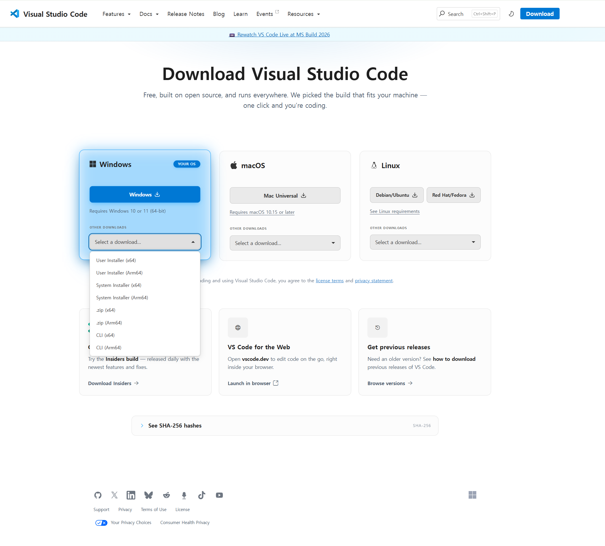

// 실습 준비
1 · VS Code 설치¶
이 페이지에서 하는 일
- 코드를 작성·확인하는 프로그램 VS Code를 설치합니다
- 프로그램이 실행되면 통과입니다
- VS Code(Visual Studio Code)는 개발할 때 쓰는 설치형 프로그램입니다.
- 앞으로의 실습, 바이브코딩은 모두 이 안에서 진행합니다.
- 가지고 계신 노트북 환경(Windows / macOS)에 맞춰 설치해주세요.
다운로드¶
VS Code 공식 사이트에 접속해 본인 OS용 설치 파일을 받습니다.
https://code.visualstudio.com/download

- Windows →
Windows버튼으로.exe설치 파일을 받아 실행합니다. - macOS →
macOS버튼으로 받은 뒤, 압축을 풀어 나온 앱을응용 프로그램폴더로 옮깁니다.
Windows 설치 중 이 옵션은 켜두세요
설치 마법사의 "Add to PATH" 항목은 체크된 상태로 두세요. 나중에 터미널에서 code 명령을 쓸 수 있게 됩니다.
설치 확인¶
- VS Code 프로그램이 실행되면 통과입니다.
- 처음 켜면 테마·언어 안내가 나올 수 있습니다. 지금은 그냥 넘어가도 됩니다.